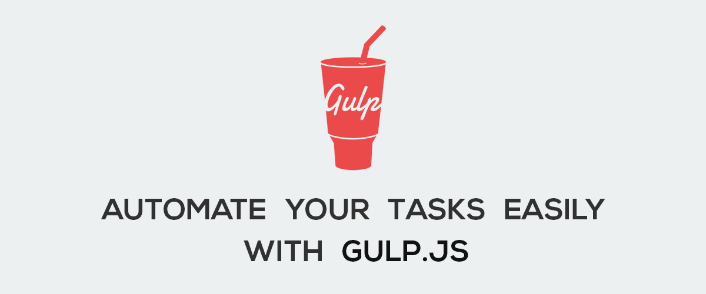

Gulp Build System
The build system I chose was Gulp. When we were downloading our bootstrap templates, I noticed that many of the template folders contained a gulp.js file. Since then, I've been interested in what gulp is. Gulp is build processing tool, instead of an installing tool. It uses javascript and is powered by Node.js. Gulp helps automate repetitive and tedious tasks, such as compressing images. However, it is not limited to just that. It can also minify code, transpile code, or running the code as soon as it is saved. In order to use Gulp, you must install plug-ins, which 3000 are readily available. With it being open-source, the amount of plug-ins will only continue to grow. Once a plug-in has been installed, you then must write a task. Writing a task consists of 3 steps. 1. Creating and naming the task, gulp.task.Here you provide a function and include any required dependencies. 2. Set a source destination using gulp.src. This is the location where your files are located in and ready to be processed. 3. Set an output destination with gulp.out. Any files that have been processed by gulp will be found here.
The website I used to help research what gulp is can be found in the following link
 Gulp.js Brand Image